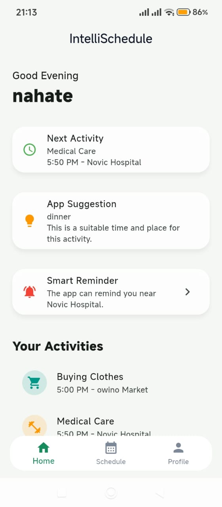

Context-Aware Intelligent Activity Planning and Reminder System
IntelliSchedule
IntelliSchedule helps users save activities and receive smarter reminders based on time, location, and availability. If a user plans to buy tomatoes and later passes near a known market, the app can recommend that place at the right moment.
